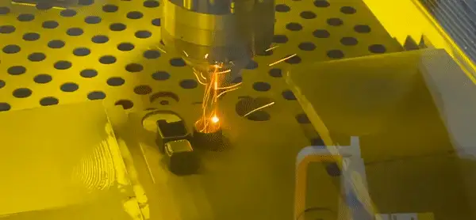

AI-driven design · Metal additive manufacturing
Xiao Shang
Postdoctoral Researcher, Massachusetts Institute of Technology 
Mechanosynthesis Group (MechE) & Gas Turbine Laboratory (AeroAstro)
I want manufacturing to keep pace with AI design, so that what AI designs can be built accurately, quickly and affordably.
On the 2026–27 academic job market: tenure-track faculty positions